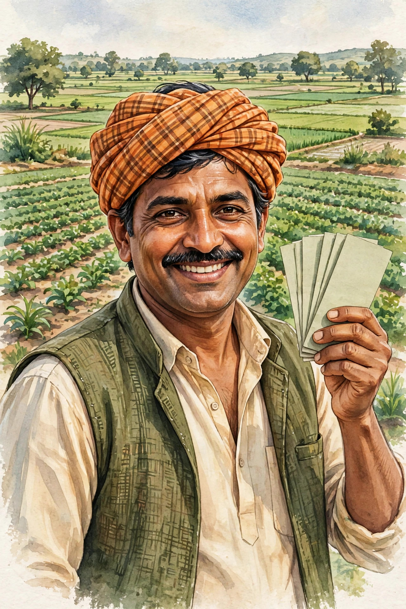

PM কিসান ২৪তম কিস্তি: ২,০০০ টাকা কবে আসবে?

PM কিসান প্রকল্পে কৃষকরা বছরে ৬,০০০ টাকা পান — ২,০০০ টাকা করে ৩টি কিস্তিতে। এবার পালা ২৪তম কিস্তির।
এটি কেন্দ্রীয় সরকারের প্রকল্প — সারা দেশের কৃষকরা একই নিয়মে টাকা পান। বছরে ৩ বার ২,০০০ টাকা করে দেওয়ার ফলে চাষের মরশুমে কৃষকের হাতে নিয়মিত নগদ টাকা থাকে। ২৪তম কিস্তি মানে এই প্রকল্পের প্রায় ৮ বছর ধরে চলা ধারাবাহিকতার আরেকটি ধাপ।
📅 ২৪তম কিস্তি কবে?
সৎ তথ্য: ২৪তম কিস্তির তারিখ এখনো ঘোষণা হয়নি। ২৩তম কিস্তি পেড হয়েছে ২০ জুন ২০২৬ (৯.৪৪ কোটি কৃষক, ১৮,৮৮০ কোটি টাকা)।
২৩তম কিস্তির পরিসংখ্যানটা লক্ষ্য করুন — ৯.৪৪ কোটি কৃষককে একসাথে ১৮,৮৮০ কোটি টাকা পাঠানো হয়েছিল। এত বড় অঙ্কের টাকা একদিনে পাঠাতে সরকারের ব্যাপক প্রস্তুতি লাগে, তাই কিস্তির তারিখ আগে থেকে ঠিক করে ঘোষণা করা হয়। ২৪তম কিস্তির ঘোষণা এলে আমরা সবার আগে জানিয়ে দেবো।
❌ "৪,০০০ টাকা" — ভুয়ো খবর!
সোশ্যাল মিডিয়ায় "২৪তম কিস্তিতে ৪,০০০ টাকা" দাবিটি অফিসিয়ালি ভুয়ো প্রমাণিত হয়েছে। কিস্তি ২,০০০ টাকাই থাকছে। একমাত্র ব্যতিক্রম: আগের আটকে থাকা কিস্তি + ২৪তম কিস্তি একসাথে এলে ৪,০০০ টাকা আসতে পারে।
ব্যাপারটা বুঝিয়ে বলি: ধরুন কারও ২৩তম কিস্তি e-KYC না থাকায় আটকে ছিল। পরে তিনি e-KYC সম্পূর্ণ করলেন। তখন সরকার বকেয়া ২৩তম কিস্তি (২,০০০) + নতুন ২৪তম কিস্তি (২,০০০) = মোট ৪,০০০ টাকা একসাথে পাঠাতে পারে। এটাই সেই "৪,০০০ টাকা" — কোনো বাড়তি টাকা নয়, শুধু বকেয়া + নতুন কিস্তির যোগফল। তাই গুজবে কান না দিয়ে নিজের e-KYC ঠিক রাখুন।
✅ টাকা পেতে যা করণীয়
- e-KYC সম্পূর্ণ করুন (বাধ্যতামূলক) — e-KYC মানে ইলেকট্রনিক পরিচয় যাচাই। আধারের সঙ্গে যুক্ত মোবাইল নম্বরে OTP দিয়ে বা বায়োমেট্রিক দিয়ে পরিচয় নিশ্চিত করা হয়। এটা না করলে সিস্টেমে আপনার পরিচয় "অসম্পূর্ণ" থাকে, ফলে কিস্তি আটকে যায়।
- ব্যাংক অ্যাকাউন্টে NPCI/DBT সিডিং থাকতে হবে — আধার-ব্যাংক লিংক না থাকলে টাকা কোন অ্যাকাউন্টে যাবে, সরকার জানতে পারে না
- জমির নথি (land records) আপডেট রাখুন — জমির মালিকানা সংক্রান্ত তথ্যে গরমিল থাকলে যাচাইয়ে নাম বাদ যেতে পারে
এই তিনটির মধ্যে e-KYC সবচেয়ে জরুরি — বেশিরভাগ "টাকা আটকে গেছে" সমস্যার মূলে এটাই থাকে। PM কিসান পোর্টাল বা নিকটবর্তী CSC কেন্দ্র থেকে e-KYC করা যায়। একবার করে নিলে বারবার করতে হয় না।
🌾 পশ্চিমবঙ্গের কৃষকদের জন্য সুখবর: রাজ্য সরকার বছরে আরও ৩,০০০ টাকা দেওয়ার ঘোষণা দিয়েছে — মোট ৯,০০০ টাকা/বছর! (ঘোষণা পর্যায়ে, নির্দেশনা আসেনি)
📞 হেল্পলাইন
155261 (টোল ফ্রি — কল করতে টাকা লাগে না)
ফোন করার সময় PM কিসান রেজিস্ট্রেশন নম্বর বা আধার নম্বর হাতের কাছে রাখুন। কিস্তি স্ট্যাটাস, e-KYC সমস্যা, নাম তালিকায় আছে কিনা — সব প্রশ্নের উত্তর এই হেল্পলাইনে পাবেন।
❓ সাধারণ প্রশ্ন (FAQ)
- ২৪তম কিস্তি কবে আসবে? — তারিখ এখনো সরকারিভাবে ঘোষণা হয়নি। ঘোষণা হলেই আমরা জানিয়ে দেবো।
- ২৪তম কিস্তিতে কি ৪,০০০ টাকা পাবো? — না। কিস্তি ২,০০০ টাকাই। শুধু আগের আটকে থাকা কিস্তি + নতুন কিস্তি একসাথে এলে ৪,০০০ আসতে পারে।
- e-KYC না করলে কী হবে? — কিস্তি আটকে যাবে। e-KYC বাধ্যতামূলক, তাই দ্রুত সম্পূর্ণ করুন।
- পশ্চিমবঙ্গের কৃষকরা কি বছরে ৯,০০০ টাকা পাবেন? — রাজ্য সরকার ৩,০০০ টাকা টপ-আপের ঘোষণা দিয়েছে, তবে এখনো ঘোষণা পর্যায়ে; সরকারি নির্দেশনা আসেনি।
- টাকা না এলে প্রথমে কী যাচাই করবো? — e-KYC সম্পূর্ণ কিনা, ব্যাংকে NPCI/DBT সিডিং আছে কিনা, জমির নথি ঠিক আছে কিনা।
🌐 আরও নতুন নতুন তথ্যের জন্য আমাদের ওয়েবসাইট ভিজিট করুন:
aicombo90.github.io/dafadar-online-seva
ওয়েবসাইটটা মোবাইলে সেভ/বুকমার্ক করে রাখুন যাতে হারিয়ে না যায়!
💬 তাজা আপডেট সবার আগে পেতে আমাদের WhatsApp গ্রুপে যোগ দিন:
WhatsApp গ্রুপে যোগ দিন →
📺 ভিডিওতে দেখতে চান? আমাদের YouTube চ্যানেল সাবস্ক্রাইব করুন:
@DafadarOnlineSeva